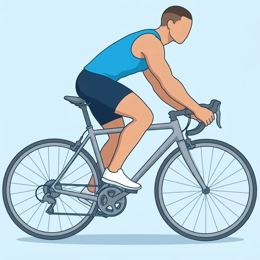
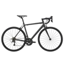

Cycling
Riding a road bicycle, used as steady endurance cardio. Seated on the saddle with your hands on the handlebars, you pedal in smooth circles; the thighs drive each pedal stroke, while the glutes, hamstrings and calves complete it.
Upper legs · Bicycle · Beginner

Muscles worked by the Cycling
Primary
Secondary
Also called: quad, quads, quadriceps, quadriceps femoris, front thigh.
Equipment

BicycleAlso called: road bike, bike, road bicycle, outdoor bike, racing bike.
How to do the Cycling
- Adjust the saddle so your knee is only slightly bent when the pedal is at the bottom of the stroke.
- Sit on the saddle with your hands on the handlebars, elbows slightly bent and shoulders relaxed.
- Place the balls of your feet over the pedal axles.
- Push each pedal down and forward, then let it come up and over the top in a smooth circle.
- Keep a steady cadence and choose a gear that lets you pedal without bouncing on the saddle.
- Ride for the planned time or distance, easing the pace for the last few minutes to cool down.
Form tips
- Keep your knees tracking in line with your feet; knees that fall in or out usually mean the saddle or cleats need adjusting.
- A higher cadence in an easier gear is kinder to the knees than grinding a hard gear slowly.
- Keep your upper body relaxed and your back long rather than rounded or rocking from side to side.
At a glance
| Body part | Upper legs |
|---|---|
| Category | Cardio |
| Force type | Push |
| Mechanic | Compound |
| Difficulty | Beginner |
| Equipment | Bicycle |
| Goals | Endurance |
| Tags | Conditioning, Leg day, No axial load, Knee safe, Lower back safe |
| MET | 8.0 (metabolic equivalent, for calorie estimates) |
| Unilateral | No |
| Bodyweight | No |
| Dataset id | cycling |
Cycling in German & Spanish
| German | Radfahren |
|---|---|
| Spanish | Ciclismo |
Descriptions, instructions and tips ship in all three languages in the JSON.
Related exercises
Exercise data (JSON)
The record below is exactly what exercises.json ships for this exercise — names, descriptions, instructions and tips in English, German and Spanish.
{
"id": "cycling",
"name_en": "Cycling",
"name_de": "Radfahren",
"name_es": "Ciclismo",
"description_en": "Riding a road bicycle, used as steady endurance cardio. Seated on the saddle with your hands on the handlebars, you pedal in smooth circles; the thighs drive each pedal stroke, while the glutes, hamstrings and calves complete it.",
"description_de": "Fahren auf dem Rennrad als gleichmäßiges Ausdauertraining. Du sitzt im Sattel, die Hände am Lenker, und trittst in runden, gleichmäßigen Kreisen; die Oberschenkel treiben jeden Pedaltritt an, während Gesäß, Beinbeuger und Waden ihn zu Ende führen.",
"description_es": "Montar en bicicleta de carretera como cardio de resistencia a ritmo constante. Sentado en el sillín con las manos en el manillar, pedaleas en círculos suaves; los muslos impulsan cada pedalada, mientras que los glúteos, los isquiotibiales y las pantorrillas la completan.",
"category": "cardio",
"force_type": "push",
"mechanic": "compound",
"difficulty": "beginner",
"equipment": "bicycle",
"body_part": "upper_legs",
"primary_muscles": [
"quadriceps"
],
"secondary_muscles": [
"gastrocnemius",
"gluteus_maximus",
"hamstrings",
"soleus"
],
"goals": [
"endurance"
],
"tags": [
"conditioning",
"leg_day",
"no_axial_load",
"knee_safe",
"lower_back_safe"
],
"is_unilateral": false,
"is_bodyweight": false,
"instructions_en": [
"Adjust the saddle so your knee is only slightly bent when the pedal is at the bottom of the stroke.",
"Sit on the saddle with your hands on the handlebars, elbows slightly bent and shoulders relaxed.",
"Place the balls of your feet over the pedal axles.",
"Push each pedal down and forward, then let it come up and over the top in a smooth circle.",
"Keep a steady cadence and choose a gear that lets you pedal without bouncing on the saddle.",
"Ride for the planned time or distance, easing the pace for the last few minutes to cool down."
],
"instructions_de": [
"Stelle den Sattel so ein, dass dein Knie nur leicht gebeugt ist, wenn das Pedal am tiefsten Punkt der Kurbelumdrehung steht.",
"Setze dich in den Sattel, die Hände am Lenker, die Ellbogen leicht gebeugt und die Schultern entspannt.",
"Setze die Fußballen über die Pedalachsen.",
"Drücke jedes Pedal nach unten und vorn und lass es dann in einem runden Kreis nach oben und über den höchsten Punkt kommen.",
"Halte eine gleichmäßige Trittfrequenz und wähle einen Gang, in dem du treten kannst, ohne im Sattel zu hüpfen.",
"Fahre die geplante Zeit oder Distanz und nimm in den letzten Minuten das Tempo heraus, um locker auszufahren."
],
"instructions_es": [
"Ajusta el sillín para que la rodilla quede solo ligeramente flexionada cuando el pedal esté en el punto más bajo de la pedalada.",
"Siéntate en el sillín con las manos en el manillar, los codos ligeramente flexionados y los hombros relajados.",
"Coloca los metatarsos sobre los ejes de los pedales.",
"Empuja cada pedal hacia abajo y hacia delante, y luego deja que suba y pase por arriba en un círculo suave.",
"Mantén una cadencia constante y elige una marcha que te permita pedalear sin rebotar en el sillín.",
"Pedalea durante el tiempo o la distancia previstos, bajando el ritmo en los últimos minutos para volver a la calma."
],
"tips_en": [
"Keep your knees tracking in line with your feet; knees that fall in or out usually mean the saddle or cleats need adjusting.",
"A higher cadence in an easier gear is kinder to the knees than grinding a hard gear slowly.",
"Keep your upper body relaxed and your back long rather than rounded or rocking from side to side."
],
"tips_de": [
"Halte die Knie in einer Linie mit den Füßen; fallen die Knie nach innen oder außen, müssen meist Sattel oder Cleats eingestellt werden.",
"Eine höhere Trittfrequenz in einem leichteren Gang schont die Knie mehr, als einen schweren Gang langsam durchzudrücken.",
"Halte den Oberkörper entspannt und den Rücken lang, statt einen runden Rücken zu machen oder seitlich hin und her zu schaukeln."
],
"tips_es": [
"Mantén las rodillas en línea con los pies; si las rodillas se van hacia dentro o hacia fuera, normalmente hay que ajustar el sillín o las calas.",
"Una cadencia más alta con una marcha más suave cuida más las rodillas que mover despacio una marcha dura.",
"Mantén el tren superior relajado y la espalda larga, en lugar de encorvada o balanceándose de lado a lado."
],
"met": 8.0,
"images": {
"flat": {
"main": "images/flat/cycling-main.webp"
}
}
}Fetch just this exercise
const { exercises } = await fetch(
"https://exercise-dataset.com/exercises.json"
).then(r => r.json());
const ex = exercises.find(e => e.id === "cycling");Free for personal and commercial in-app use with attribution (“Exercise data by RepDB”) — see the license and ready-made attribution snippets. Redistributing the data as a dataset or API is not permitted.